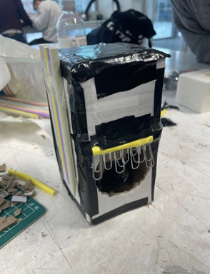
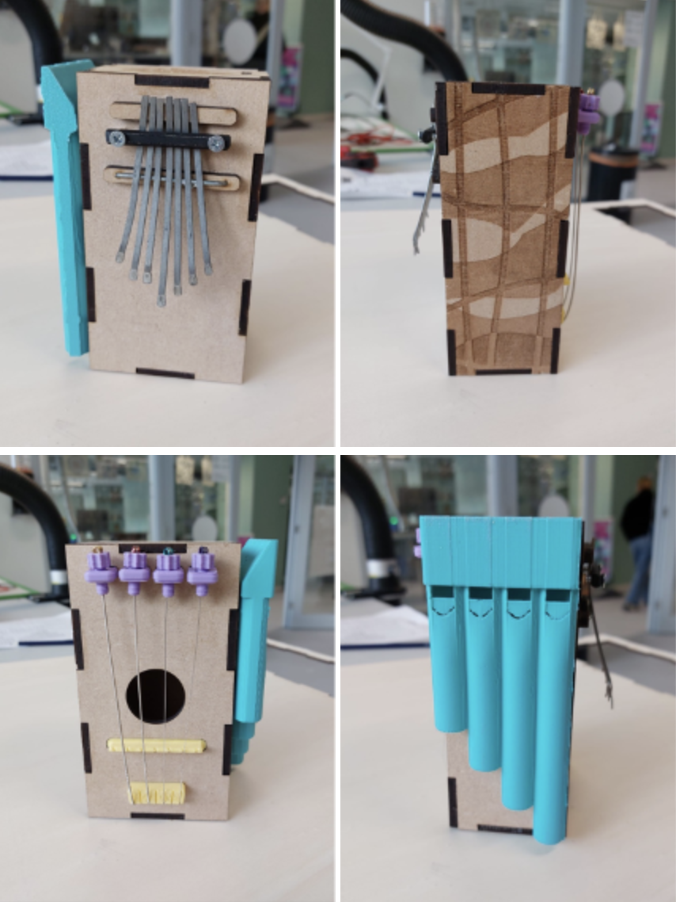

For this project we had to make a real life product based on our passions in life, which could influence the world positively. Our passion lies in music and the way we decided to twist this into something positive would be a musical instrument which also functions as a tool to help people with concentration problems.
We started by making a lot of sketches with load of different instruments. We wanted to have multiple instruments in one device, so that people could make a bunch of different sounds, with just one device. The instrument had to be calming aswell, so finding the right instruments wasnt an easy task.
The first instrument included a shaker, a calimba, a flute, a washboard and a guitar. We mostly stuck by these instruments during the whole project as they were both calming and doable. Our first prototype was made out of cheap materials like cartboard and paper straws. It doesn't look that great but it gave us a good idea on what the Tiny Tune would feel like to use.
The second prototpye already looks alot cleaner, but it's still made out of cheap materials. We decided we wanted to make the Tiny Tune a bit smaller, as prototype 1 was kind of big to hold. We also couldnt get the instruments to work properly, but we imagined this would work better if we started using proper materials.
The final iteration used actual materials, which resulted in a way better look and feel. At the same time the instruments actually started to work. After testing this product on people with the before mentioned problems, we came to the conclusion that this product could really help them, they told us that it actually helped them trying to concentrate and they think that it is a creative way to solve that problem
